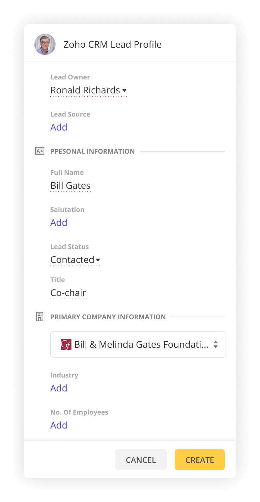

Описание
Linckr — это расширение, разработанное для автоматизации процесса поиска лидов в LinkedIn и их сохранения в вашей основной CRM-системе.
С помощью расширения Linckr вам больше не нужно вручную обрабатывать каждую деталь информации о лидах и сравнивать её с данными в вашей CRM. Создание карточек лидов можно выполнить всего в несколько кликов.
Ссылка
https://linckr.in/
Моя роль
В качестве ведущего дизайнера расширения Linckr я возглавила весь процесс дизайна. Это включало редизайн расширения для LinkedIn, разработку лендинга и завершение дизайна приложения для управления расширением.
Проблема
Стартап успешно запустил MVP, достиг положительных результатов и был готов к росту. Однако для перехода на следующий этап требовались следующие улучшения:
-
Улучшение пользовательского опыта расширения
-
Возможности для командной работы
-
Модель управления подписками для команд
-
Разработка брендинга
-
Создание лендинга
Решение
Редизайн расширения
Помимо обновления визуального стиля расширения, была пересмотрена его структура для улучшения пользовательского опыта.
Поля ввода были организованы в логические группы и приоритизированы на основе их эффективного использования.
До

После
Командное взаимодействие
Необходимость внедрения функций для командного взаимодействия стала очевидной.
Для решения этой задачи мы провели исследование, чтобы выявить ключевые потребности пользователей, разработали пользовательские пути и создали варфреймы. Они были протестированы и доработаны до окончательных дизайнов.

Платежи
Раздел платежей решает все вопросы клиентов, связанные с транзакциями.
Пользователи могут управлять подписками, настраивать количество лицензий, добавлять способы оплаты, просматривать историю платежей и применять промокоды.

Брендинг
После проведения анализа рынка и определения основных принципов, отражающих суть и цели продукта, я разработала несколько ключевых визуальных элементов.
В их числе обновлённый логотип, новая цветовая палитра, шрифты и иллюстрации. Кроме того, я подготовила материалы для поддержки маркетинговой стратегии, обеспечивая цельный и привлекательный имидж бренда.
Лендинг
Основной целью создания лендинга было привлечение новых клиентов. Эта цель была достигнута благодаря эффективной разработке структуры и контента.

Результаты
Вот какие улучшения были достигнуты:
-
Расширение базы пользователей
-
Ускорение обработки лидов
-
Возможность командного взаимодействия
-
Повышение узнаваемости бренда